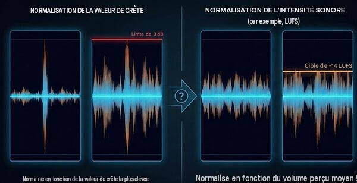

Types de compression selon le média de diffusion¶
 Source: futurelearn.com
Source: futurelearn.com
La compression audio ne se fait pas nécessairement de la même façon selon le média sur lequel le son sera diffusé.
Un fichier destiné à un film, à un jeu vidéo, à une plateforme de diffusion en continu ou à un réseau social peut avoir des exigences différentes en matière de :
- dynamique
- niveau sonore
- format
- débit
- fréquence d'échantillonnage
- résolution
- volume final
L'objectif est toujours de trouver un équilibre entre qualité sonore, dynamique et compatibilité avec le média de diffusion.
1. Compression selon le média de diffusion¶
Pourquoi adapter la compression ?¶
Tous les systèmes de diffusion ne reproduisent pas le son de la même manière.
Par exemple, une bande sonore de film peut conserver une grande plage dynamique, alors qu'un contenu destiné aux réseaux sociaux peut être davantage contrôlé afin que les dialogues et les effets restent audibles sur des écouteurs ou de petits haut-parleurs.
Il faut donc distinguer deux notions :
Compression dynamique
→ réduit les différences entre les sons faibles et les sons forts.
Compression de données
→ réduit la taille du fichier audio, par exemple avec MP3 ou AAC.
Ces deux types de compression sont complètement différents.
2. Vidéo¶
Pour une production vidéo ou télévisuelle, on cherche généralement à conserver une dynamique relativement naturelle tout en évitant les niveaux excessifs.
La priorité est souvent :
- conserver l'intelligibilité des dialogues
- maintenir une dynamique cohérente
- éviter la saturation
- respecter les normes de niveau sonore du diffuseur
Exemple
Une scène peut contenir :
Dialogue → niveau modéré
Ambiance → faible
Explosion → très forte
Si on compresse excessivement la piste, l'explosion risque de perdre son impact.
Pour le cinéma et la vidéo narrative, la dynamique fait partie de l'expérience.
3. Musique¶
La musique demande généralement un contrôle plus important de la dynamique, particulièrement pour les productions destinées à la diffusion numérique.
On peut utiliser :
- compression
- EQ
- limiteur
- automation
- maximisation
L'objectif n'est pas nécessairement d'avoir le son le plus fort possible.
Il faut plutôt obtenir un niveau suffisamment élevé tout en conservant :
- les transitoires
- la dynamique
- la clarté
- l'impact
Exemple
Une batterie très dynamique peut avoir :
Coup faible → -18 dB
Coup fort → -6 dB
La compression peut réduire cet écart afin de rendre le niveau plus constant.
4. Streaming et plateformes numériques¶
Les plateformes de diffusion comme YouTube, Spotify et Apple Music utilisent leurs propres systèmes de gestion du niveau sonore.
Une production trop forte peut donc être réduite automatiquement lors de la lecture.
Cela signifie qu'il n'est plus toujours avantageux de chercher à rendre un fichier extrêmement fort.
Principe important¶
Plus fort ne signifie pas nécessairement meilleur.
Une bonne préparation doit conserver suffisamment de dynamique et éviter la distorsion.
5. Jeux vidéo¶
Dans un jeu vidéo, la dynamique doit fonctionner dans des situations très différentes.
Le joueur peut utiliser :
- des écouteurs
- un casque
- des haut-parleurs de télévision
- un système de cinéma maison
Les sons doivent donc rester suffisamment audibles sans devenir agressifs.
La compression peut être utilisée pour :
- contrôler les explosions
- rendre les effets plus constants
- maintenir les dialogues audibles
- éviter des écarts de volume trop importants
Cependant, une compression excessive peut enlever de l'impact aux effets.
6. Réseaux sociaux et contenu mobile¶
Les vidéos destinées aux réseaux sociaux sont souvent écoutées dans des environnements bruyants et sur de petits systèmes de reproduction.
On retrouve souvent :
- téléphone
- écouteurs
- petits haut-parleurs
- écoute à faible volume
Dans ce contexte, il est important que :
- la voix reste intelligible
- le niveau soit relativement constant
- les éléments importants ressortent rapidement
Une compression dynamique plus importante peut donc être pertinente.
7. Contrôle de la plage dynamique¶
La plage dynamique correspond à la différence entre les sons les plus faibles et les sons les plus forts d'une production.
Par exemple :
Son faible Son fort
↓ ↓
-40 dB -3 dB
← dynamique →
Une grande plage dynamique signifie qu'il existe une grande différence entre les sons faibles et les sons forts.
Une petite plage dynamique signifie que les niveaux sont plus rapprochés.
La compression dynamique¶
 Source: easyzic.com
Source: easyzic.com
Le compresseur réduit automatiquement le niveau lorsque le signal dépasse un certain seuil.
Exemple :
Avant compression :
Faible ──────────────── Fort
-30 dB -3 dB
Après compression :
Faible ────────── Fort
-30 dB -10 dB
Le son fort est rapproché du son faible.
Normalisation des fichiers¶
 Source: ampedstudio.com
Source: ampedstudio.com
La normalisation consiste à ajuster le niveau général d'un fichier audio selon une référence.
Il existe différentes façons de normaliser.
Normalisation au peak¶

Source: ampedstudio.comOn ajuste le fichier en fonction de son niveau de crête.
Exemple :
Peak original : -4 dBFS
Peak désiré : -1 dBFS
On augmente alors le niveau général de 3 dB.
Limite¶
La normalisation au peak ne tient pas nécessairement compte de la façon dont l'oreille perçoit le volume.
Deux fichiers peuvent avoir exactement le même peak à -1 dBFS et sembler avoir des volumes très différents.
Amplitude moyenne et perception du volume¶
Pour mieux représenter le volume perçu, on utilise des mesures comme :
- RMS
- LUFS
Le RMS donne une indication de l'énergie moyenne du signal.
Les LUFS sont particulièrement utilisés pour mesurer le niveau sonore perçu d'une production.
On peut donc avoir :
Fichier A
Peak : -1 dBFS
Niveau moyen : faible
Fichier B
Peak : -1 dBFS
Niveau moyen : élevé
Les deux fichiers ont le même niveau de crête, mais le fichier B semblera beaucoup plus fort.
Volume final de l'exportation¶
Le niveau final d'une production doit être contrôlé avant l'exportation.
Il faut vérifier :
- le niveau de crête
- le niveau moyen
- les LUFS
- les éventuelles saturations
- la dynamique
- la compatibilité avec le média de diffusion
Attention au limiteur
Un limiteur placé sur le master peut empêcher le signal de dépasser un niveau déterminé.
Par exemple :
Limiter
Ceiling = -1 dB
Le limiteur empêche le signal de dépasser cette valeur.
Mais pousser trop fortement le limiteur peut entraîner :
- perte de dynamique
- distorsion
- pompage
- fatigue auditive
- perte d'impact
Exemple concret
Imaginons une scène de film comprenant :
- dialogue
- pas
- ambiance
- porte
- explosion
Sans contrôle dynamique :
Dialogue -20 dB
Pas -25 dB
Ambiance -30 dB
Porte -12 dB
Explosion -2 dB
L'écart entre le dialogue et l'explosion est très important.
On peut utiliser de la compression et de l'automation pour contrôler certains éléments tout en conservant l'impact de l'explosion.
L'objectif n'est donc pas de mettre tous les sons au même niveau.
L'objectif est de contrôler la dynamique afin que chaque élément fonctionne dans le contexte de la production.
Compression et normalisation : ne pas confondre¶
| Compression dynamique | Normalisation |
|---|---|
| Modifie la dynamique | Modifie principalement le niveau général |
| Réduit les écarts entre faible et fort | Déplace le niveau du fichier |
| Peut modifier le caractère du son | Ne modifie normalement pas la dynamique |
| Utilise seuil, ratio, attaque, release | Utilise une valeur cible |
| Peut créer un effet sonore | Sert principalement à ajuster le niveau |
Exemple
Normalisation :
Avant : -10 à -3 dB
Après : -8 à -1 dB
Tout le signal est simplement augmenté.
Compression :
Avant : -30 à -3 dB
Après : -25 à -10 dB
Les niveaux forts ont été réduits par rapport aux niveaux faibles.
À retenir
La compression dynamique sert à contrôler les écarts de niveau.
La normalisation sert à ajuster le niveau général d'un fichier.
Le niveau moyen influence fortement la perception du volume.
Le média de diffusion détermine en partie la quantité de contrôle dynamique nécessaire.
Une bonne production audio ne cherche donc pas simplement à être la plus forte possible.
Elle doit être :
- suffisamment forte
- suffisamment dynamique
- intelligible
- sans distorsion
- adaptée au média de diffusion
- cohérente avec les autres productions du même type.
Oui. Je te suggère de faire 2 exercices différents par motif, avec une progression Exercice A = technique de base et Exercice B = application créative. Ça donne 20 exercices au total.
Exercices — Création de motifs sonores dans REAPER¶
Consignes générales¶
Pour chaque exercice :
- Trouver un son.
- Travailler dans REAPER.
- Conserver le son original.
- Créer une version transformée.
- Ajuster les paramètres manuellement.
- Éviter les presets lorsque c'est possible.
- Exporter le résultat en WAV.
- Écouter le résultat avec un casque ou des écouteurs.
1. Balancement¶
Motif
Balancement
Exercice 1A — Gauche / droite¶
Objectif
Créer un mouvement régulier du son entre la gauche et la droite.
Consignes
- Importer le son dans REAPER.
- Ajouter une automation du Pan.
- Faire circuler le son :
Gauche → Centre → Droite → Centre → Gauche
- Répéter le mouvement pendant toute la durée du son.
- Faire des transitions fluides.
Défi
Le mouvement doit être régulier et donner l'impression que le son se déplace réellement dans l'espace.
Exercice 1B — Balancement irrégulier¶
Objectif
Créer un mouvement stéréo plus organique et imprévisible.
Consignes
Créer une automation différente :
Gauche → Droite → Centre → Gauche → 70 % droite → 30 % gauche
Modifier également la vitesse des déplacements.
Défi
Le mouvement ne doit pas suivre un rythme parfaitement régulier.
Résultat recherché
Créer l'impression d'un son qui tourne ou se déplace de façon imprévisible autour de l'auditeur.
2. Miroir¶

Motif
Miroir
Exercice 2A — Original / miroir¶
Objectif
Créer une deuxième partie qui est le miroir de la première.
Consignes
- Importer un son.
- Couper le son en deux.
- Conserver la première partie.
- Copier cette partie.
- Utiliser Reverse sur la copie.
- Placer la copie après l'original.
Original → Inversé
Créer une transition suffisamment fluide entre les deux parties.
Exercice 2B — Miroir stéréo¶
Objectif¶
Combiner inversion temporelle et déplacement stéréo.
Consignes
Créer :
Partie A
↓
Pan gauche
↓
Reverse
↓
Pan droite
La deuxième partie doit être le miroir temporel et spatial de la première.
Résultat recherché
Donner l'impression que le son est réfléchi dans un espace sonore.
3. Spirale¶

Motif
Spirale
Exercice 3A — Spirale de pitch¶
Objectif
Créer une montée ou une descente progressive du pitch.
Consignes
Utiliser ReaPitch et automatiser le pitch.
Exemple :
0 → +3 → +7 → +12 → +7 → +3 → 0
Résultat recherché
Le son doit donner l'impression de tourner autour d'une hauteur centrale.
Exercice 3B — Spirale complète¶
Objectif
Combiner plusieurs paramètres.
Utiliser au minimum :
- Pitch
- Pan
- Reverb
Faire évoluer les paramètres simultanément.
Exemple :
Pitch ↑
Pan gauche → droite
Reverb ↑
Volume ↓
Résultat recherché
Créer un son qui semble s'éloigner dans une spirale.
4. Time Stretch¶

Motif
Time Stretch
Exercice 4A — Ralentissement¶
Objectif
Découvrir la transformation temporelle.
Consignes
Créer trois versions du même son :
100 %
200 %
400 %
Comparer les résultats.
Questions
- Le son reste-t-il reconnaissable ?
- Qu'est-ce qui change dans sa texture ?
- Quels artefacts apparaissent ?
Exercice 4B — Transformation extrême¶
Objectif
Utiliser le Time Stretch comme outil de sound design.
Consignes
Créer une version extrêmement ralentie du son.
Essayer d'obtenir un résultat au moins quatre fois plus long que l'original.
Ajouter ensuite :
- Reverb
- EQ ou ReaEQ
- éventuellement ReaPitch
Résultat recherché
Transformer un son ordinaire en texture sonore.
5. Ping-Pong¶

Motif
Ping-Pong
Exercice 5A — Delay ping-pong¶
Objectif
Créer un écho qui se déplace alternativement entre les deux côtés.
Consignes
Utiliser un Delay avec déplacement stéréo.
Original → Gauche
Echo 1 → Droite
Echo 2 → Gauche
Echo 3 → Droite
Défi
Faire diminuer progressivement les répétitions.
Exercice 5B — Ping-pong rythmique¶
Objectif
Créer un motif rythmique avec le ping-pong.
Consignes
Créer plusieurs répétitions du son selon un rythme.
Exemple :
G . D . G D . G
Modifier :
- délai
- volume
- pan
- feedback
Résultat recherché
Créer un motif qui pourrait être intégré à une musique ou à un design sonore.
6. Rebondissement¶

Motif
Rebondissement
Exercice 6A — Objet qui tombe¶
Objectif
Créer l'illusion d'un objet qui tombe et rebondit.
Consignes
Créer plusieurs copies du son.
À chaque rebond :
- diminuer le volume
- raccourcir le son
- modifier légèrement le pitch
Impact
↓
Rebond
↓
Rebond
↓
Rebond
Résultat recherché
L'auditeur doit pouvoir imaginer un objet physique.
Exercice 6B — Rebondissement spatial¶
Objectif
Ajouter une dimension spatiale au rebondissement.
Consignes
En plus du volume et du pitch, automatiser le Pan.
Exemple :
Impact → Centre
Rebond 1 → Gauche
Rebond 2 → Droite
Rebond 3 → Gauche
Ajouter éventuellement une petite reverb.
Résultat recherché
Créer l'impression que l'objet rebondit dans un espace réel.
7. Flexion¶
Motif
Flexion
Exercice 7A — Pitch Bend¶
Objectif
Créer une flexion de la hauteur.
Consignes
Utiliser ReaPitch.
Automatiser le pitch :
0 → +12 → 0
Puis :
0 → -12 → 0
Résultat recherché
Créer une montée et une descente de hauteur clairement perceptibles.
Exercice 7B — Flexion extrême¶
Objectif
Créer un effet de sound design à partir du pitch.
Consignes
Créer une automation plus complexe :
0 → +12 → +5 → -7 → -12 → 0
Ajouter éventuellement :
- Reverb
- Delay
- Automation de volume
Résultat recherché
Créer un son qui semble se tordre ou se déformer.
8. Inversion¶

Motif
Inversion
Exercice 8A — Son inversé¶
Objectif
Découvrir l'effet Reverse.
Consignes
- Importer le son.
- Dupliquer le fichier.
- Inverser la copie.
- Comparer avec l'original.
Identifier ce qui change dans :
- l'attaque
- la décroissance
- la texture
- la perception du son.
Exercice 8B — Transition inversée¶
Objectif
Créer une transition sonore.
Consignes
Utiliser un son inversé pour préparer l'arrivée d'un son original.
Son inversé
↓
↓
↓
Impact original
Ajouter éventuellement :
- Reverb
- Delay
- Fade-in
Résultat recherché
Créer un effet de montée ou d'aspiration vers l'impact.
9. Vitesse de lecture¶

Motif
VITESSE DE LECTURE
Exercice 9A — Rapide / lent¶
Objectif
Observer l'effet de la vitesse de lecture sur un son.
Consignes
Créer quatre versions :
50 %
75 %
100 %
200 %
Comparer les résultats.
Questions
- Le pitch change-t-il ?
- Le caractère du son change-t-il ?
- Le son devient-il plus court ou plus long ?
Exercice 9B — Accélération progressive¶
Objectif
Créer un son dont la vitesse augmente progressivement.
Consignes
Créer plusieurs segments :
Lent → Moyen → Rapide → Très rapide
Utiliser des changements de vitesse progressifs.
Résultat recherché
Créer une sensation d'accélération.
10. Percussion et résonance¶

Motif
Percussion et Résonnance
Exercice 10A — Transformer un son en percussion¶
Objectif
Créer une percussion à partir d'un son qui n'est pas une percussion.
Consignes
- Choisir un son.
- En extraire une petite portion.
- La répéter selon un rythme.
- Ajuster le volume.
- Utiliser éventuellement un EQ et un compresseur.
Exemple :
X . X . X X . X
Résultat recherché
Le son doit devenir une nouvelle percussion.
Exercice 10B — Percussion résonnante¶
Objectif
Créer une percussion avec une longue résonance.
Consignes
Créer une percussion puis lui ajouter :
- ReaVerbate ou ReaVerb
- ReaPitch
- EQ
Expérimenter avec la durée de la réverbération.
Défi
Créer trois versions :
Petite pièce
Grande salle
Espace irréel
Résultat recherché
Faire entendre clairement la différence entre les trois espaces.
Projet final — Création d'un motif sonore¶
Après les 20 exercices, demander aux étudiants de créer un motif sonore original de 15 à 30 secondes.
Contraintes
Le projet doit utiliser au minimum :
- 3 motifs différents
- 1 automation
- 1 traitement temporel
- 1 traitement spatial
- 1 traitement de hauteur ou de timbre
Exemple :
Son source
↓
Time Stretch
↓
ReaPitch
↓
Balancement
↓
Delay Ping-Pong
↓
ReaVerbate
↓
Automation
↓
Motif sonore final
Objectif
Créer un son qui pourrait être utilisé dans :
- un film
- un jeu vidéo
- une animation
- une publicité
- une installation multimédia